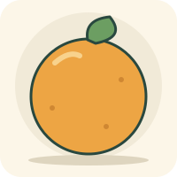

बिंदु और चंद्रबिंदु
Anusvara and chandrabindu
Audio uses your device’s Hindi voice; availability varies. No native recordings included.आज का नियम
Understand the conceptअनुस्वार ं का उच्चारण संदर्भ पर निर्भर है। चंद्रबिंदु ँ सामान्यतः स्वर की नासिक्यता बताता है। कुछ लिखावटों में बिंदु भी नासिक्यता के लिए प्रयुक्त होता है।
शब्द और अर्थ
Vocabulary
अंगूर
grapes
रंग
colour
संतरा
orange
चाँद
moonमाँ
motherआँख
eyeहँसना
laughहंस
swanमात्रा जोड़ो
Build a syllableक
पहले व्यंजन चुनो, फिर मात्रा। आकृति बदलते हुए देखो।
चित्र देखकर बोलो
Picture talkउदाहरण और पठन
Examples & readingमाँ ने अंगूर धोए।
रात में चाँद निकला।
बच्चा हँस रहा है।
बोलें और सोचें
Apply itहंस और हँस के अर्थ से दो अलग वाक्य बनाइए।
लेखन अभ्यास
Writing practiceअं अँ · रंग · माँ · चाँद
अं अँ · रंग · माँ · चाँद
उदाहरण ध्यान से पढ़ें। फिर कॉपी में लिखें और अपने दो नए वाक्य बनाएँ।
अपना ज्ञान जाँचें
Check your learningचाँद में कौन-सा चिह्न है?
उत्तर देखें
चंद्रबिंदु (ँ)।
इस पाठ में दिए गए अर्थ से शब्द मिलाएँ: grapes
उत्तर
अंगूर
कार्यपत्रक · Worksheet
Completion is self-marked and saved locally.